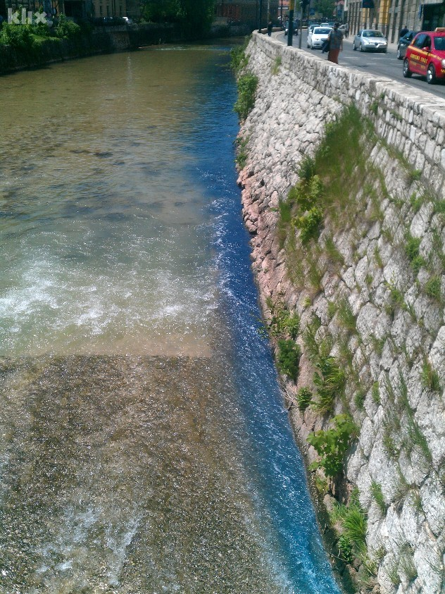
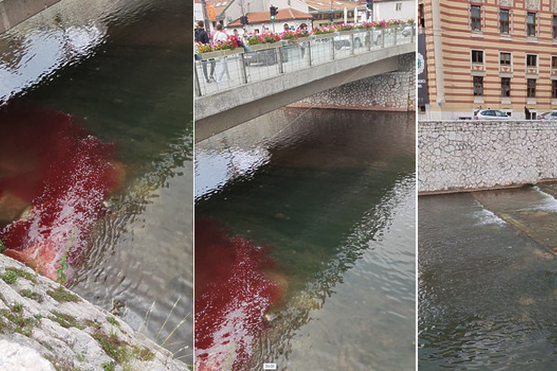
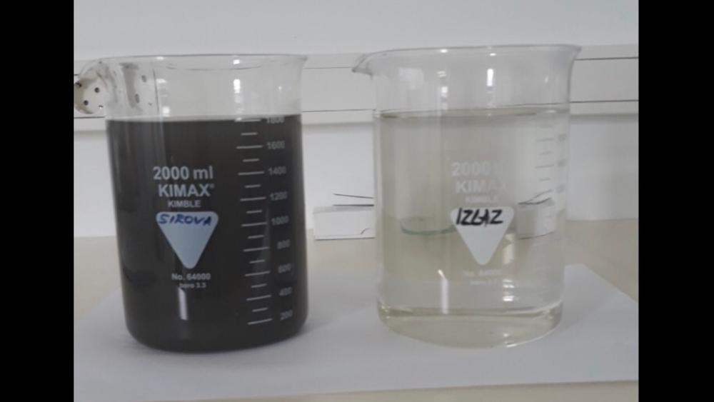
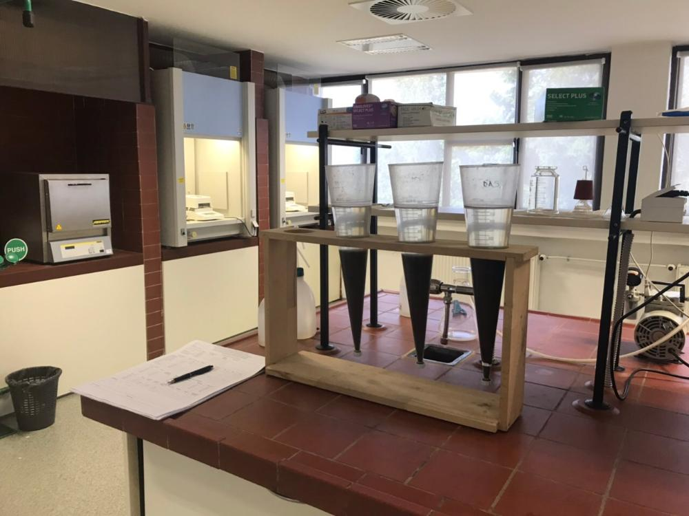
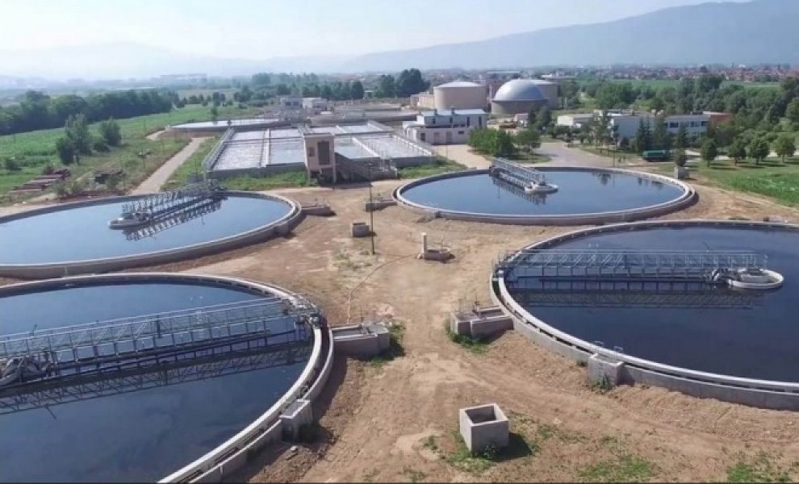
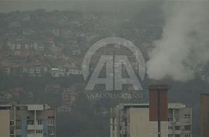
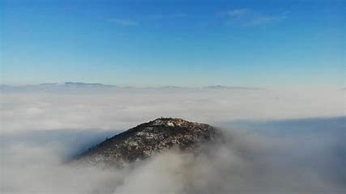
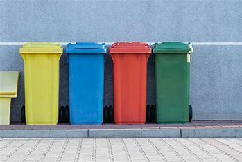

Najbolji primjer zagađenja voda u Kantonu Sarajevo je Miljacka, u koju se direktno izljevaju otpadne vode. Voda u Miljackoj, kako kažu nadležni nije direktno opasna po zdravlje, mada se u Miljacku izljeva 70% kanalizacije Sarajeva. Istraživanja pokazuju da je Miljacka zagađena različitim materijama koje su loše za floru i faunu rijeke. Zbog manjka pročišćivača kanalizacije ona se direktno uljeva u rijeke te se zna desiti da rijeka nekada poplavi, ili pak pocrveni. Voda iz Miljacke se prečišćava, ali tek u Butili, prije ulijevanja u Bosnu. Iz postrojenju za prečišćavanje vode Butila navode da se u vodi nalaze velike količine smeća. Mulj iz postrojenja se koristi za proizvodnju el. energije i gasa za grijanje.
    Kućna ložišta su najveći zagađivač zraka u KS i prema tome treba djelovati. Veliki problem je i što kućna ložišta ne koriste samo ugalj i drvo, već i druge jeftinije alternative koje više zagađuju. Na polju ukidanja kućnih ložišta ne radi se puno, svake godine se daju poticaji za prelazak na druge energente, ali su poticaji jako mali. To pokazuje činjenica da je budžet KS 2023 godinu predvidio samo 100KM za ublažavanje zagađenja zraka. Zakonske regulative nema, tako da uglavnom samo Kanton daje male poticaje, koji nikome nisu zanimljivi. Uzmimo na primjer prelazak sa uglja na plin, lista stvari koje se moraju kupiti je velika. Od bojlera i radijatora pa nadalje. To su veliki troškovi koje donacije od 200-300KM ne mogu ni blizu pokriti. Najboljle bi bilo ovaj problem rješiti geotermalnim pumpama. Imamo i domaću firmu za proizvodnju geotermalnih pumpi, ”ThermoFlux”, ali se zbog velikih ulaganja na početku malo ko odluči za njih.
 Nepravilno odlaganje otpada predstavlja jednog od najvećih zagađivača tla i vode. U Sarajevu ima samo nekoliko mjesta gdje je moguće reciklirati otpad. Većina otpada se baca na deponije, sa kojih odlazi u tlo i podzemne vode. Vrlo je važno pravilno odlaganje el. otpada jer se u njemu nalaze razne opasne hemikalije. Pored toga što je razvrstavanje otpada bolje za okoliš, ono smanjuje eksploataciju sirovina iz prirode, npr. papir se pravi od celuloze koja se dobija iz drveća, ako recikliramo papir, drveće se neće morati sijeći, jer dobijamo celulozu iz iskorištenog papira, slično je i sa staklom, plastikom i limenkama.
